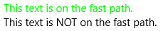
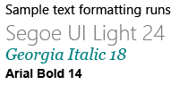

Text block
Text block is the primary control for displaying read-only text in apps. You can use it to display single-line or multi-line text, inline hyperlinks, and text with formatting like bold, italic, or underlined.
Is this the right control?
A text block is typically easier to use and provides better text rendering performance than a rich text block, so it's preferred for most app UI text. You can easily access and use text from a text block in your app by getting the value of the Text property. It also provides many of the same formatting options for customizing how your text is rendered.
Although you can put line breaks in the text, text block is designed to display a single paragraph and doesn't support text indentation. Use a RichTextBlock when you need support for multiple paragraphs, multi-column text or other complex text layouts, or inline UI elements like images.
For more info about choosing the right text control, see the Text controls article.
Create a text block
- Important APIs: TextBlock class, Text property, Inlines property
The WinUI 3 Gallery app includes interactive examples of most WinUI 3 controls, features, and functionality. Get the app from the Microsoft Store or get the source code on GitHub
Here's how to define a simple TextBlock control and set its Text property to a string.
<TextBlock Text="Hello, world!" />
TextBlock textBlock1 = new TextBlock();
textBlock1.Text = "Hello, world!";
Content model
There are two properties you can use to add content to a TextBlock: Text and Inlines.
The most common way to display text is to set the Text property to a string value, as shown in the previous example.
You can also add content by placing inline flow content elements in the Inlines property, like this. (Inlines is the default content property of a TextBlock, so you don't need to explicitly add it in XAML.)
<TextBlock>Text can be <Bold>bold</Bold>, <Underline>underlined</Underline>,
<Italic>italic</Italic>, or a <Bold><Italic>combination</Italic></Bold>.</TextBlock>
Elements derived from the Inline class, such as Bold, Italic, Run, Span, and LineBreak, enable different formatting for different parts of the text. For more info, see the Formatting text section. The inline Hyperlink element lets you add a hyperlink to your text. However, using Inlines also disables fast path text rendering, which is discussed in the next section.
Performance considerations
Whenever possible, XAML uses a more efficient code path to layout text. This fast path both decreases overall memory use and greatly reduces the CPU time to do text measuring and arranging. This fast path applies only to TextBlock, so it should be preferred when possible over RichTextBlock.
Certain conditions require TextBlock to fall back to a more feature-rich and CPU intensive code path for text rendering. To keep text rendering on the fast path, be sure to follow these guidelines when setting the properties listed here.
- Text: The most important condition is that the fast path is used only when you set text by explicitly setting the
Textproperty, either in XAML or in code (as shown in the previous examples). Setting the text via TextBlock'sInlinescollection (such as<TextBlock>Inline text</TextBlock>) will disable the fast path, due to the potential complexity of multiple formats. - CharacterSpacing: Only the default value of 0 is fast path.
- TextTrimming: Only the
None,CharacterEllipsis, andWordEllipsisvalues are fast path. TheClipvalue disables the fast path.
Note
UWP Only: Prior to Windows 10, version 1607, additional properties also affect the fast path. If your app is run on an earlier version of Windows, these conditions will cause your text to render on the slow path. For more info about versions, see Version adaptive code.
- Typography: Only the default values for the various
Typographyproperties are fast path. - LineStackingStrategy: If LineHeight is not 0, the
BaselineToBaselineandMaxHeightvalues disable the fast path. - IsTextSelectionEnabled: Only
falseis fast path. Setting this property totruedisables the fast path.
You can set the DebugSettings.IsTextPerformanceVisualizationEnabled property to true during debugging to determine whether text is using fast path rendering. When this property is set to true, the text that is on the fast path displays in a bright green color.
You typically set debug settings in the OnLaunched method override in the code-behind page for App.xaml, like this.
protected override void OnLaunched(LaunchActivatedEventArgs e)
{
#if DEBUG
if (System.Diagnostics.Debugger.IsAttached)
{
this.DebugSettings.IsTextPerformanceVisualizationEnabled = true;
}
#endif
// ...
}
In this example, the first TextBlock is rendered using the fast path, while the second is not.
<StackPanel>
<TextBlock Text="This text is on the fast path."/>
<TextBlock>This text is NOT on the fast path.</TextBlock>
<StackPanel/>
When you run this XAML in debug mode with IsTextPerformanceVisualizationEnabled set to true, the result looks like this.

Caution
The color of text that is not on the fast path is not changed. If you have text in your app with its color specified as bright green, it is still displayed in bright green when it's on the slower rendering path. Be careful to not confuse text that is set to green in the app with text that is on the fast path and green because of the debug settings.
Formatting text
Although the Text property stores plain text, you can apply various formatting options to the TextBlock control to customize how the text is rendered in your app. You can set standard control properties like FontFamily, FontSize, FontStyle, Foreground, and CharacterSpacing to change the look of the text. You can also use inline text elements and Typography attached properties to format your text. These options affect only how the TextBlock displays the text locally, so if you copy and paste the text into a rich text control, for example, no formatting is applied.
Note
Remember, as noted in the previous section, inline text elements and non-default typography values are not rendered on the fast path.
Inline elements
The Microsoft.UI.Xaml.Documents namespace provides a variety of inline text elements that you can use to format your text, such as Bold, Italic, Run, Span, and LineBreak.
You can display a series of strings in a TextBlock, where each string has different formatting. You can do this by using a Run element to display each string with its formatting and by separating each Run element with a LineBreak element.
Here's how to define several differently formatted text strings in a TextBlock by using Run objects separated with a LineBreak.
<TextBlock FontFamily="Segoe UI" Width="400" Text="Sample text formatting runs">
<LineBreak/>
<Run Foreground="Gray" FontFamily="Segoe UI Light" FontSize="24">
Segoe UI Light 24
</Run>
<LineBreak/>
<Run Foreground="Teal" FontFamily="Georgia" FontSize="18" FontStyle="Italic">
Georgia Italic 18
</Run>
<LineBreak/>
<Run Foreground="Black" FontFamily="Arial" FontSize="14" FontWeight="Bold">
Arial Bold 14
</Run>
</TextBlock>
Here's the result.

Typography
The attached properties of the Typography class provide access to a set of Microsoft OpenType typography properties. You can set these attached properties either on the TextBlock, or on individual inline text elements. These examples show both.
<TextBlock Text="Hello, world!"
Typography.Capitals="SmallCaps"
Typography.StylisticSet4="True"/>
TextBlock textBlock1 = new TextBlock();
textBlock1.Text = "Hello, world!";
Typography.SetCapitals(textBlock1, FontCapitals.SmallCaps);
Typography.SetStylisticSet4(textBlock1, true);
<TextBlock>12 x <Run Typography.Fraction="Slashed">1/3</Run> = 4.</TextBlock>
UWP and WinUI 2
Important
The information and examples in this article are optimized for apps that use the Windows App SDK and WinUI 3, but are generally applicable to UWP apps that use WinUI 2. See the UWP API reference for platform specific information and examples.
This section contains information you need to use the control in a UWP or WinUI 2 app.
APIs for this control exist in the Windows.UI.Xaml.Controls namespace.
- UWP APIs: TextBlock class, Text property, Inlines property
- Open the WinUI 2 Gallery app and see the TextBlock in action. The WinUI 2 Gallery app includes interactive examples of most WinUI 2 controls, features, and functionality. Get the app from the Microsoft Store or get the source code on GitHub.
We recommend using the latest WinUI 2 to get the most current styles, templates, and features for all controls.